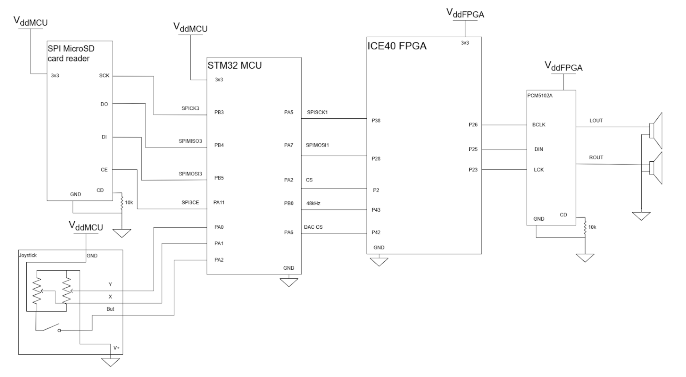
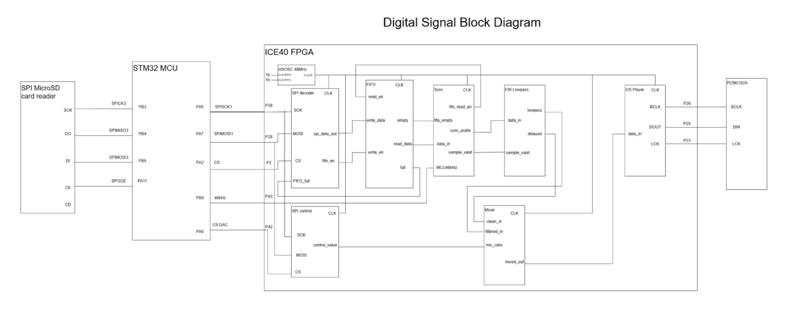
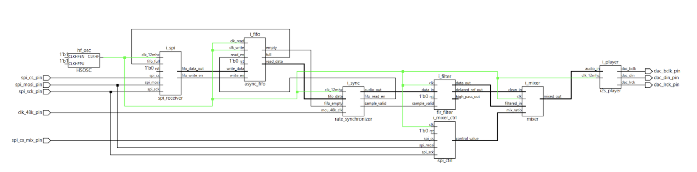

Parts List
Below is a table of the parts we used. Those with astricks are new hardware we used. While most of these are simple, specifcally the MicroSD reader and DAC module are new as we have not used either one of these. The MicroSD card introduces a new library while the DAC module brings a new type of logic that has been breifly covered.
| Part Name | Part Number / Model | Link | Notes |
|---|---|---|---|
| MicroSD Card Reader * | Adafruit 254 | DigiKey | Standard breakout board/Stockroom |
| 16GB microSD Card * | SanDisk SDSQUNC-016G-AN6MA | SanDisk Store | Class 10 UHS-I/Stockroom |
| Joystick Module * | SunFounder ST0001 | DigiKey | XY analog joystick/Stockroom |
| DAC Module * | Teyleten Robot PCM5102A DAC | Amazon | I2S DAC — for audio output from FPGA/MCU/$13.88 |
| Nucleo-L432KC | NUCLEO-L432KC | (add link) | Main MCU/Lab Kit |
| Upduino FPGA Board | UPDuino v3.1 | (add link) | ICE40UP5K FPGA board/Lab Kit |
NEW HARDWARE
The new hardware we added to this project was the SD card reader, the joystick, and the DAC. The SD card reader is used to read music we save, the joystick to control the sound output and the DAC to play the sound.
Schematic
In the following diagram, it is our electircal schmeatic on how we wired up our hardware. Note that our joystick we have reversed ground and 3.3V due to the signal sending the joystick click being wired to ground for an unknown reason. This did not affect the functionality of the joystick since it works based on resistances.

Block Diragram
The following diagrams are associated with our FPGA. The first diagram showcases our block modules used in digitalk logic in the whole system. The second diagram was generated by Radiant to describe the functionality of the FPGA itself.

